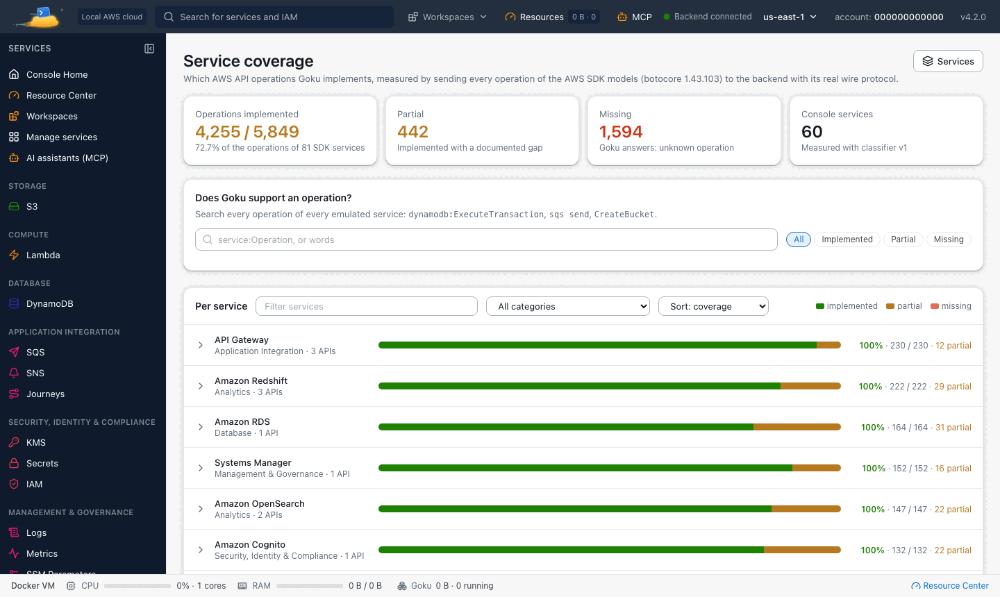

Goku is a free local AWS emulator that uses the same port, credentials and AWS SDK configuration as LocalStack, so your AWS CLI calls, SDK clients and init scripts keep working. What changes is what comes in the box: a web console for 60 services, real database and container engines, and every feature free.
Updated 27 September 2026 · Goku 4.0.0 · Free, no AWS account
Goku was formerly called Mimir. Same product, new name: the image is now tanujsoni027/goku (it was tanujsoni027/mimir-aws) and the command is goku. See old and new names.
LocalStack is a great project, and a lot of test suites are written against it. Goku keeps the parts those suites depend on: the wire protocol, the port, the credentials and the SDK configuration are the same, so most migrations need an image swap and a few renamed settings. After you switch, these keep working as they are:
The endpointhttp://localhost:4566, with region us-east-1 and any local credentials such as test / test.
Every AWS CLI and SDK call. Your application code needs no changes.
Init scripts mounted under /etc/localstack/init/, which Goku reads as a compatibility path.
Health checks on /_localstack/health and /_localstack/init, so CI jobs that wait on them need no edits.
Inspection endpoints/_aws/ses (captured emails) and /_aws/sqs/messages (peek at or purge a queue).
S3 virtual-hosted addressing through *.s3.localhost.localstack.cloud.
The Docker socket mount that lets Lambda, RDS and ElastiCache run as containers.
Comparison
What's different
The two take a different shape. Goku ships one image with the AWS-compatible endpoint, a console modeled on the AWS console and real engines behind the heavier services, and nothing in it is behind a paid tier. Here is how the two compare:
Goku
LocalStack (free tier)
Web console
Full AWS-style console for 60 services, bundled
Resource browser (limited free)
Price
Everything free
Core free; RDS, ECS, EKS, Cognito, Athena and more are paid
RDS / ElastiCache
Real Postgres, MySQL and Redis containers, free
Paid tier
ECS / EKS
Real containers and real k3s, free
Paid tier
Glue
Real local Spark and PySpark jobs and notebooks
Paid tier
Step Functions UI
Live workflow graph in the console
—
Setup
One docker run, one image
One container plus separate UI products
Data endpoints
Dedicated port range 5500–5659
Ports vary
Compared with Goku 4.0.0 in September 2026. LocalStack's plans change, so check its own site for what each tier includes today.
A few behaviours differ, and they are worth knowing before you switch:
Area
LocalStack
Goku
Lambda executor
Configurable (LAMBDA_EXECUTOR)
Always Docker containers
Remote Docker for Lambda
LAMBDA_REMOTE_DOCKER
Not supported; use per-function hot reload (S3Bucket=hot-reload)
Choosing services
SERVICES=sqs,s3,...
GOKU_SERVICES=sqs,s3,..., or the console's Services page
Data directory
/var/lib/localstack
/app/data, persisted by default
Log level
LS_LOG / DEBUG
QUARKUS_LOG_LEVEL
Migration
How to switch from LocalStack to Goku
Both listen on port 4566, so stop LocalStack first, or start Goku on another port with GOKU_EDGE_PORT (see port conflicts).
On your machine: the goku CLI
The CLI installs natively on macOS, Linux and Windows and runs Goku in Docker for you. goku env exports the endpoint, region and test credentials for the AWS CLI and SDKs:
terminal
$ curl -fsSL https://tanuj24.github.io/goku/install.sh | sh
goku start
eval "$(goku env)"
aws s3 ls
On Windows, install with irm https://tanuj24.github.io/goku/install.ps1 | iex and load the variables with goku env --shell powershell | Invoke-Expression. The console opens at http://localhost:8080.
In Docker Compose: change the image
Here is a typical LocalStack service and its Goku equivalent. The port, credentials and init-script mount stay; the image, the data path and the setting names change:
PERSISTENCE is gone because the Goku image persists to /app/data by default. To pin a release instead of latest, use tanujsoni027/goku:4.0.0. Port 80 in the container is the web console.
Rename your settings
Goku reads GOKU_* settings and does not translate LocalStack variables, so rename the ones you use:
LocalStack
Goku
LOCALSTACK_HOST, LOCALSTACK_HOSTNAME
GOKU_HOSTNAME
PERSISTENCE=1
GOKU_STORAGE_MODE=persistent (the all-in-one image already persists)
SERVICES
GOKU_SERVICES (all, core, presets or service ids)
LAMBDA_DOCKER_NETWORK
GOKU_SERVICES_LAMBDA_DOCKER_NETWORK
DOCKER_NETWORK
GOKU_SERVICES_DOCKER_NETWORK
LAMBDA_REMOVE_CONTAINERS=1
GOKU_SERVICES_LAMBDA_EPHEMERAL=true
USE_SSL=1
GOKU_TLS_ENABLED=true
LS_LOG / DEBUG=1
QUARKUS_LOG_LEVEL
Init scripts, health checks and hard-coded hosts
Scripts under /etc/localstack/init/ run unchanged; Goku also reads its native path, /etc/goku/init/, and prefers it when the same file name is in both. The Goku image has no AWS CLI or boto3 inside, so a hook that calls aws in the container should use unsigned requests instead, for example curl -X PUT http://localhost:4566/my-bucket, or run from your machine. If your Lambda functions hard-code localhost.localstack.cloud, set GOKU_DNS_EXTRA_SUFFIXES=localhost.localstack.cloud and Goku resolves that name to itself.
In the box
What you get with Goku
Beyond the 73 AWS-compatible services on port 4566, Goku adds tools for building and testing locally, all free:
A web console for 60 services with a Load sample data button on every service page.
Real engines: RDS starts real PostgreSQL, MySQL or MariaDB, ElastiCache runs real Redis or Valkey, and EKS boots real k3s.
Lambda step-through debugging from VS Code, IntelliJ, PyCharm or GoLand. See testing Lambda locally.
AWS Glue 6.0 and 5.1 jobs and notebooks on real Spark. See AWS Glue locally.
Environment snapshots to save, restore and reset the whole local cloud, and fault injection for throttling, errors, latency and Lambda timeouts.
The IAM Policy Lab, which shows who gains or loses access before you ship an IAM change.
The console runs at localhost:8080, next to the AWS endpoint on localhost:4566.
Know the limits
When real AWS is still the answer
Goku is a local development and testing sandbox, not a production AWS replacement, and it doesn't promise byte-for-byte parity with AWS. If you need exact AWS behaviour across hundreds of edge cases, use the real cloud for the last mile. To see which API operations a service implements, open Service coverage in the console. It lists every AWS SDK operation as implemented, partial or missing.

Service coverage: which AWS SDK operations Goku implements, service by service.
FAQ
Frequently asked questions
Is Goku really free?
Yes. Everything in Goku is free, including RDS, ECS, EKS, Cognito, Athena and Glue job execution, and the web console. There is no account to create and nothing to upgrade to.
Do I have to change my application code to move from LocalStack?
No. Keep pointing your code at http://localhost:4566 with region us-east-1 and credentials such as test / test. Only the settings that configure the emulator itself, such as LOCALSTACK_HOST or SERVICES, need their GOKU_* names.
Will my LocalStack init scripts still run?
Yes. Scripts mounted under /etc/localstack/init/ run unchanged. The Goku image has no AWS CLI or boto3 inside, so scripts that call aws inside the container should use unsigned curl requests to http://localhost:4566 or run from your machine.
Can I run Goku and LocalStack at the same time?
Both use port 4566 by default. Stop one of them, or start Goku on other ports, for example GOKU_CONSOLE_PORT=9090 GOKU_EDGE_PORT=4567 goku start.
Is Goku affiliated with LocalStack or AWS?
No. Goku is an independent project and is not affiliated with, endorsed by or sponsored by LocalStack or Amazon Web Services.